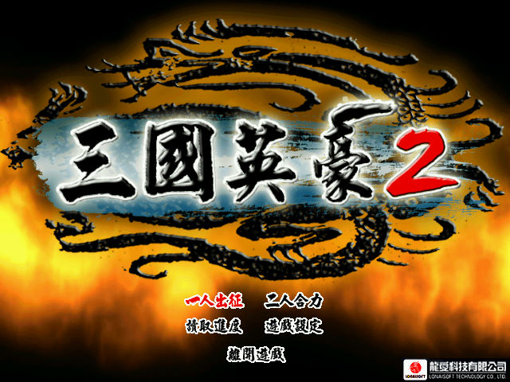
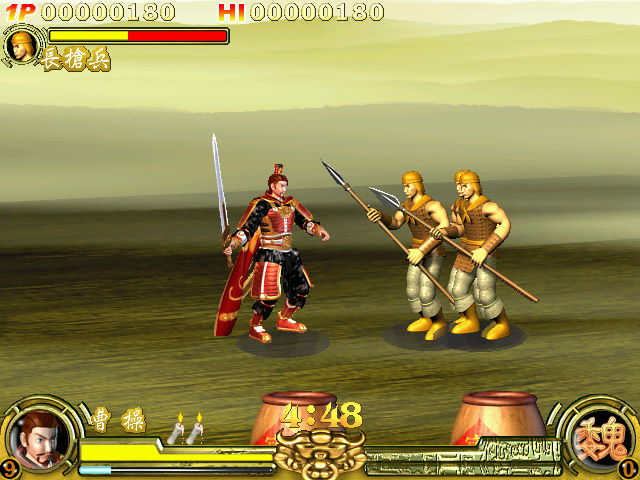

名稱：三國英豪2 (中文版) 簡介：龍愛2004年出品的動作遊戲 [待補]。

保護：光碟，破解碼： Sango2.exe 85 C0 75 26 6A 00 -- -- EB -- -- -- 85 C0 74 25 6A 30 -- -- EB -- -- -- 85 C0 74 22 6A 30 -- -- EB -- -- -- 修改：所有武將出現（包含隱藏武將呂布、貂蟬等），修改datas\Sango2： 00000000h: 01 00 00 00 01 00 00 00 01 00 00 00 01 00 00 00 00000010h: 01 00 00 00 01 00 00 00 01 00 00 00 01 00 00 00 00000020h: 01 00 00 00 01 00 00 00 01 00 00 00 01 00 00 00 00000030h: 01 00 00 00 01 00 00 00 操作：可在遊戲中設定，以下為1P設定值： 上下左右 = 移動 C = 攻擊／確定／撿取 X = 跳躍／取消 Z = 使用怒氣 攻擊+跳躍 = 絕招（會損血）